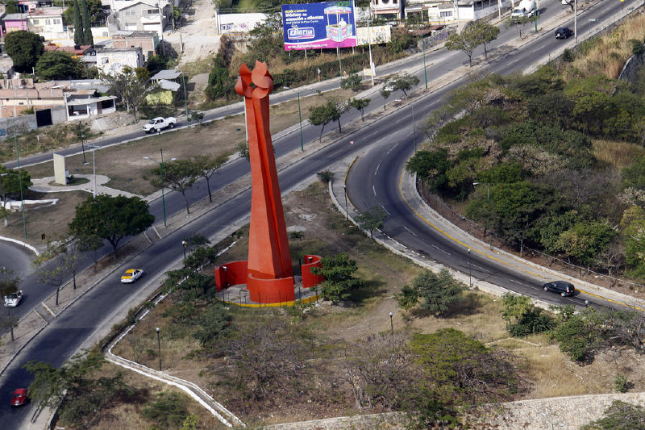

En la parte sur de la ciudad de Tuxtla Gutiérrez se levanta La Antorcha de la Solidaridad, escultura metálica firmada por metálica realizada por el artista Enrique Carbajal conocido como “Sebastián”, Es conocido por sus esculturas monumentales construidas en acero o concreto, las cuales decoran múltiples ciudades alrededor del mundo, desde San Antonio (Texas), Dallas (Texas) hasta Osaka, Japón.
Esta escultura fue creada en 1993, está hecho de Fierro con esmalte acrílico de101 x 41 x 41 cm. Tiene una altura de 30 metros.Glorieta del libramiento sur poniente s/n, Col. Sn José Libramiento, Tuxtla Gutiérrez, Chiapas.
Tomar la avenida central poniente hasta llegar al crucero Mactumatzá (a la altura de la colonia Sta. Elena y frente al hotel camino real), doblar a la izquierda en dirección al libramiento Sur poniente, hasta llegar a la glorieta de dicho libramiento. El monumento lo puedes identificar por su peculiar color naranja.
En este lugar puedes tomar Fotografías y debido a su ubicación también puedes observar la parte norte poniente de la ciudad.

posicione el mouse sobre las imágenes